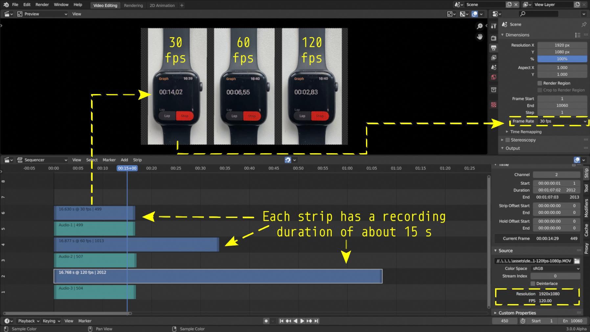
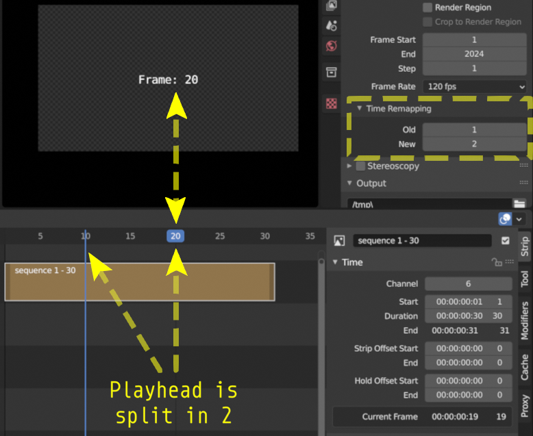
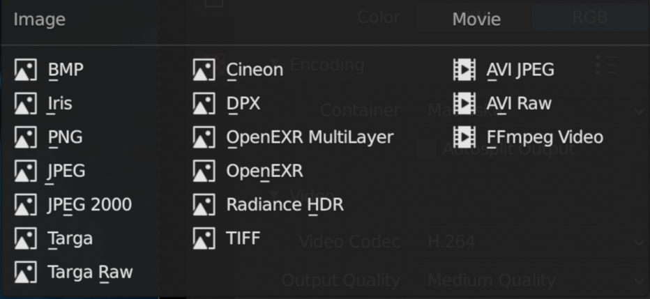
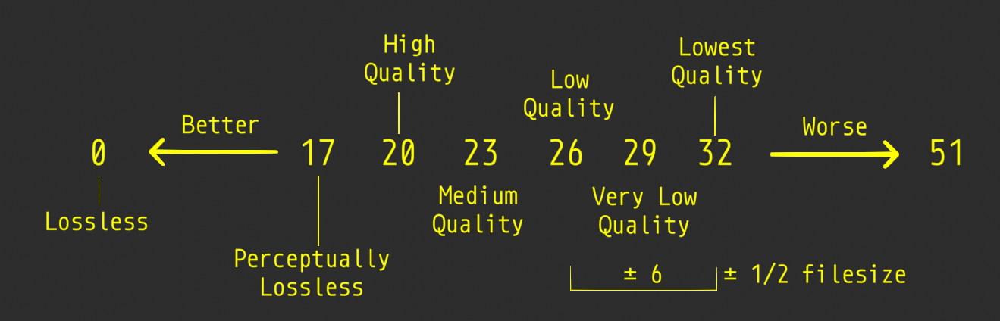

2.1.6. Project settings¶
{kind=link}
ビデオ プロジェクトのプロジェクト設定は、 Properties Editor の[Output]タブにグループ化されています。
この エディター はデフォルトの Video Editing Workspace の右上領域にあり、3D モデリングなどの他のモジュールと共有されます。プロパティにはいくつかのカテゴリがあり、タブ (左側のアイコン列) から選択できます。各タブには、データ型のプロパティと設定が再グループ化されています。
VSE 1 の場合、一般的に使用されるのは [Output]タブ のみです。このタブは、Video Editing Workspace を開くとデフォルトで選択されます。これには、6 つのカテゴリ (パネル) が含まれています。
Format
Frame Range
Stereoscopy
Output
Metadata
Post Processing
Reference
Name: |
Dimensions |
Context: |
Video Sequence Editor > Properties |
Location: |
Tabs > Output Properties > Format |
{kind=link}
- Resolution
解像度 X と Y は、出力ビデオの水平軸と垂直軸のピクセル数を指します。一般的なビデオ解像度は次のとおりです。
High Definition (HD) or 720p (1280 x 720)
Full HD or 1080p (1920 x 1080)
Ultra HD (UHD) 4K or 2160p (3840 x 2160).
図 2 は、これら 3 つの一般的な解像度をより視覚的に示しています。 UHD または 4K バージョンと比較して、HD 解像度がいかに小さいかに注目してください。もちろん、ソーシャル メディア、映画館など、他にも多くの形式があります。かなり網羅的なリストは Wikipedia にあります。

図2: Ultra HD, FHD and HD resolution¶
[Render Presets] ボタン (図 1) を使用すると、一般的なビデオ レンダリング設定 (HDTV 1080p、HDTV720p など) から選択できます。解像度、解像度 %、アスペクト比、fps は、選択したプリセットに応じて設定されます。 独自のプリセットを作成することもできます。[Dimensions] パネルの設定を好みに合わせて変更し、[New Prests] フィールドに名前を入力して、[+] ボタンを押します。プリセットは、Python ファイルとして scripts/presets/render ディレクトリに保存されます。
- Resolution %
[Resolution %] (デフォルト = 100%) を低いパーセンテージに設定して、ビデオを一時的に低い解像度でレンダリングすることができます。たとえば、10% に設定すると、フル HD ムービーは 192 x 108 ピクセルの解像度でレンダリングされます。 LMB-Click して, Video Sequence Editor の Preview の右上隅を 押し続けることで 確認できます 2 。 Statusbarに、
X : 190 Y: 100 ...のような表示が表示されます。 これは、クリックした場所が、解像度 X = 190 および解像度 Y = 100 であることを意味します。したがって、完全なレンダリング イメージは実質的に 192 x 108 ピクセルになります。もちろん、写真はひどいものになります。絵を描くために自由に使えるのは 192 x 108 = 20736 ピクセルだけです。図 3 ～ 4 は、図 2 の 4K 画像の割合を 10% と 5% に設定したレンダリング結果を示しています。UHD 画像を 10% レンダリングしても、依然として 386 x 216 ピクセルの画像が得られることに注意してください。画像は、鮮明に見えるように拡大され、図 2 と同じ寸法になっています。図 4 は、実際には、幅 192 ピクセル x 高さ 108 ピクセルのみです。
[Resolution %] を下げることは、プレビューやタイムラインのスクラブを高速化することを意味するものではありません。 そのためには、 プロキシ が必要です。プロキシはデフォルトで有効になっているため ([Edit] > [Preferences] > [System] > [Video Sequencer] > [Proxy Setup] を参照)、[Resolution %] が小さい場合、タイムラインのナビゲーションに大きな改善は見られません。レンダリング時間のみが影響を受けます。このオプションは、ビデオの音声同期を確認するなど、簡単なテスト レンダリングを作成する場合に使用できます。
- Aspect X/Y
私たちはコンピューター ディスプレイのピクセルを小さな正方形として見る傾向がありますが、ほとんどの最新のコンピューターでは、実際には正方形です。映画やテレビの世界では、特に古い機器では、非正方形ピクセルが一般的です。たとえば、DVD や BluRay のすべてのムービーは長方形のピクセルを使用します。アナモフィック レンズで撮影すると、非正方形ピクセルが使用されるため、コンピューター画面上で生の画像が歪んで表示されます。
図 5 は、水平圧縮 1.33 のアナモルフィック レンズで撮影した生の画像の例を示しています。アナモフィック レンズは通常、超ワイド スクリーン ビューを実現するために映画で使用されます。これを実現するために、画像は水平方向に圧縮されます。すぐには明らかではないかもしれませんが、図 5 は少し歪んで見えます。
ffmpeg を使用すると、この画像のアスペクト比を取得できます。結果は次のとおりです。
590x332 [SAR 96:96 DAR 295:166]ffmpeg によると、画像は 590 x 332 ピクセルです (Blender も同様です)
これにより、古い DVD ムービーをコンピュータで再生するときに、あらゆる種類の問題が発生する可能性があります。場合によっては、文字が圧縮されたり、引き伸ばされたりすることがあります。なぜ？それに対して何ができるでしょうか?
課題
アナモルフィックレンズの詳しい説明と使用例。いくつかの例については、以下の「ピクセル アスペクト比 Acid テスト」を参照してください。 - http://frs.badcoffee.info/PAR_AcidTest/ - https://ia800900.us.archive.org/11/items/TvTestCard/TvTestCard_512kb.mp4 - https://ia800900.us.archive.org/11/items/TvTestCard/TvTestCard_512kb.mp4 - https://www.dpreview.com/articles/5787493634/shooting-photos-with-anamorphic-lenses-is-a-fun-way-to-get-out-of-a-creative-rut)
- RenderRegion/Crop to Render Region
これらのオプションは VSE では使用できず、設定するとエラー メッセージ
Border rendering is not supported by sequencerが表示されます。- Frame Rate
1 秒あたりに表示されるフレーム数。ドロップダウン メニューには、いくつかの一般的なフレーム レート (23.98、24、25、29.97、30 など) が表示されます。
これらのプリセットはさまざまな規格を参照しています: NTSC (30 fps、主に北米) と PAL/SECAM (25 fps、主にヨーロッパ)と、1950 年代にカラーテレビ (23.98 および 29.97)を採用するために行われた必要な調整です。
[Custom]を選択すると、他のフレーム レートを使用できます。FPS とベースの値を入力できます。カスタム フレームレートは
FPS / base numberの結果です。たとえば、25 fps プリセットをシミュレートするには、FPS = 25 および Base = 1 または FPS = 50 および Base = 2 を入力できます。最初のビデオ ストリップが Sequencer に追加されると、プロジェクトのフレーム レートがそのストリップのフレーム レートに自動的に設定されます 3 。 フレーム レートが異なる 2 番目のストリップを追加しても、最初のストリップが削除された場合でも、その設定は変更されません。 Blender VSE は 1 つのプロジェクト内で異なるフレーム レートを処理できません。奇妙なオーディオ ストリップやスローまたはファスト モーション効果を除いて、警告は表示されません。
図7: 1 つのプロジェクト内での異なるフレーム レートの混合¶
図7 には、異なるフレーム レートで記録された 3 つのストリップが含まれています。キャプチャ フレーム レートはそれぞれ 30 fps、60 fps、120 fps でした。それぞれ記録には約 15 秒かかりました。
fps = 30 のストリップが最初に追加されました。これにより、プロジェクト全体のプレゼンテーション フレーム レートが 30 fps に設定されました。その後、60 fps と 120 fps のストリップが追加されました。これによってプロジェクトのプレゼンテーションのフレーム レートは変更されません。そして、当然のことながら、ストリップのキャプチャ フレーム レートは変更されません。
オーディオはプレゼンテーションのフレーム レートに依存しないため、すべてのオーディオ ストリップの長さは約 15 秒です。 キャプチャ fps = 30 のムービー ストリップの長さも約 15 秒です。これは、キャプチャとプレゼンテーションのフレーム レートが等しいためです。
キャプチャ フレーム レートが 60 fps および 120 fps のストリップは、はるかに長くなります。プレビューの時計の画像では、約 15 秒後 (最初の時計)、2 番目と 3 番目の時計では 6.55 秒と 2.83 秒しか経過していないことがわかります。
これは、2 番目のストリップ (60 fps) には、30 fps のフレームレートで表示された 16.877 s x 60 fps = 1012.62 (キャプチャされた) フレームが含まれており、これには約 33.754 秒かかります。時計の実時間は約6.55秒です。 60 fps のキャプチャ フレーム レートで、これはフレーム 393 の画像を表します。ここでも、フレーム 393 は 30 fps のプレゼンテーション フレーム レートで時間 13.1 秒に表示されます。これは、最初の時計で確認できるおおよその時間です (開始時間の違いによる多少の違いは許容してください)。
これらが実際のアニメーション ムービーである場合、ストリップ 60 fps でスローモーション効果が見られ、ストリップ 120 fps ではさらに効果が得られます。
したがって、プレゼンテーション フレーム レートをストリップのキャプチャ フレーム レートと同じに設定することが重要です。ストリップのキャプチャ フレーム レートは、Sequencer の Sidebarにある [Strip]タブ > [Source] > [FPS] で確認できます。
注釈
ビデオのキャプチャ フレーム レートの決定は、場合によっては難しい場合があります。ほとんどのデバイス (特にスマートフォン) では、可変フレーム レート モードでキャプチャすることについて言及していません。したがって、キャプチャ フレーム レートを 30 FPS に設定すると、実際にはフレーム レートは 29 fps から 31 fps の間で変化する可能性があります。これはストリップの開始と終了には影響しませんが、ビデオとオーディオの同期に（小規模な）問題が発生する可能性があります。
Extra Tools > FFMPEG セクションでは、ビデオを可変レートから固定レートに変換し、FPS を変更するソリューションを提供しました。 4
{kind=link}
{kind=link}
{kind=link}
{kind=link}
Reference
Name: |
Dimensions |
Context: |
Video Sequence Editor > Properties |
Location: |
Tabs > Output Properties > Frame range |
- Frame Start/End/Step
Sequencer のタイムラインには、数百のフレームにまたがる複数のストリップを含めることができます。これらすべてのフレームをレンダリングする必要はありません。 Start フィールドと End フィールドを使用して、出力範囲を制限できます。
- Step
タイムライン内の各フレームごとに進むフレーム数を制御します。Sequencer のストリップに 10 フレームが含まれている場合、ステップ 2 では 5 フレーム (フレーム 1、3、5、7、9) がレンダリングされます。
- Time Stretching
これを使用して、プロジェクト全体の再生を高速化または低速化できます。たとえば、図8 には、現在のフレームの 2 つのインジケーターがあります。再生ヘッドは、青い線 (古いフレーム番号) と新しいフレーム番号を含む青いボックス (実際にプレビューで表示されます) に分割されます。
- Old
元のアニメーションのフレームの長さ。
- New
新しいアニメーションのフレームの長さ。
図8: 時間のリマッピング (Old:1, New:2)¶
Reference
Name: |
Stereoscopy |
Context: |
Video Sequence Editor > Properties |
Location: |
Tabs > Output Properties > Stereoscopy |
Stereoscopyは、一対の 2 次元画像から 3 次元の奥行きの錯覚を作り出す技術です。これらの画像は、私たちの左目と右目が実際の画像を認識する方法に似ています。 Blender では、立体的な画像やムービーを非常に簡単に作成できます。 [Output]プロパティー > [Stereoscopy] > [Stereo 3D] でオプションを有効にするだけです。詳細については; Blender マニュアルの Stereoscopy を参照してください。
Blender VSE での Stereoscopy ムービーの編集は、次の 2 段階のプロセスです。
[Output]プロパティー > [Stereoscopy] > [Stereo 3D] で、 Stereoscopy オプションを有効にします。これにより、ストリップの [Source]プロパティに新しいパネルも追加されます。
Stereoscopyが有効になったストリップを選択し、ムービー ストリップの [Source] パネルで[Use Multi-View]オプションを有効にします。このオプションは、ステップ 1 を完了した後にのみ使用できます。適切なビュー形式を選択します。これはソース ファイルの形式によって異なります。画像ペアが 2 つの個別のファイルとして保存される場合。[Individual] を選択します。画像ペアが両方の画像を並べて 1 つのファイルとして保存する場合は、[Stereo 3D] を選択し、[Stereo Mode] を [Side-by-Side] に設定します。
Reference
Name: |
Output |
Context: |
Video Sequence Editor > Properties |
Location: |
Tabs > Output Properties > Output |
{kind=link}
図9は、[Output] プロパティの展開された [Output]パネルを示しています。ここでは、プロジェクトのレンダリング結果の保存場所とファイル形式を定義します。図9 では、FFmpeg ビデオ ファイル形式が選択されています。他の可能なファイル形式を図10 に示します。
- Output Path
前のセクション では、ビデオ プロジェクトに関連するすべてのファイルを保持するために考えられるディレクトリ構造について説明しました。この構造では、レンダリングされた出力を 3-2-Render に保存できます。 blend ファイルは 3-1-Blend-file に保存されているため、出力ファイル パスは
//../3-2-render/である必要があります。最初の // は、現在の blend ファイルを含むディレクトリの Blender 表記です。
ファイル形式に関する選択に応じて、ファイル名またはディレクトリ名を追加できます。 ファイル
//../3-2-render/myProject-v01.mp4パスにより、指定されたディレクト(3-2-render)にファイル myProject-v01.mp4 が作成されます 。拡張子を
//../3-2-render/myProject-v01のように省略した場合、Saving File Extensions を有効にすると、20 フレームのプロジェクトに対してファイル myProject-v010001-0020.mp4 が生成されます。イメージ シーケンスをレンダリングする場合は、サブディレクトリを指定することをお勧めします。
//../3-2-render/myProject-v01/のように最後に / を置きます。プロジェクトをレンダリングすると、ファイル0001.png、0002.png、0003.png ... がフォルダー 3-2-render/myProject-v01 に作成されます。- Saving File Extensions
このオプションを有効にすると、ファイル名に適切なファイル拡張子が追加されます (使用可能なファイル形式については、図10 を参照)。
- Cache result
このオプションを有効にすると、レンダー キャッシュが EXR ファイルに保存されます。これは大量の合成に役立ちますが、レンダリングされたシーンに間接的に影響します。
- Color
用途に応じて以下を選択します。
BW: グレースケール イメージを保存
RGB: カラー イメージ (赤、緑、青のチャネル) を保存
RGBA: 透明度を有効にしたカラー イメージ (赤、緑、青、アルファ チャネル) を保存
RGBA オプションは、特定のファイル形式でのみ使用できます (下記を参照)。たとえば、JPG ファイル形式にはアルファ チャネルがありませんが、PNG 形式にはアルファ チャネルがあります。また、ほとんどのビデオ ファイル形式には透明度オプションがありません。
- File Format
Sequencerのコンテンツは、一連の画像 (BMP、Iris、PNG、…、TIFF、 参照 図10) として、またはもちろん一連の画像が埋め込まれたムービーとしてレンダリングできます。
図10: ファイルフォーマット¶
どれを選ぶべきですか?
選択された画像形式に応じて、いくつかのフィールドが Sidebar に追加されます。
考えられるすべての画像およびムービー形式については、すべての Video & Audio Formats と graphics 形式の概要とともに、ドキュメントの Output セクション で詳しく説明されています(リストについては図10を参照)。
警告
Blender は何よりも 3D および 2D モデリングおよびアニメーション プログラムであることを心に留めておくことが重要です。アートワークは主に、3D ビューまたはグリース ペンシル ワークスペース内から作成およびレンダリングされます。アーティストは、解像度、構成、速度、色などを完全に制御できます。ただし、ビデオ編集者は通常、カメラ出力からの既存の素材を使用して作業します。ここでは、多くのパラメータがすでに固定されています。したがって、出力設定はインポートされた映像によって大きく左右されます。
Video Editing Workspace にいる場合、デフォルトでは、以下に設定されています。
File Format: FFmpeg Video
Video Codec: H.264
Audio Codec: AAC
他のワークスペースではデフォルトが、以下に設定されており、
File Format: PNG (Image Sequence)
Blender ドキュメントや多くのチュートリアルではこのアプローチが好まれています。
レンダリング プロセスを停止して再起動することが簡単になります (たとえば、クラッシュが発生した場合や、別の目的でコンピュータが必要な場合)。
カラー グレーディングや VFX などの後処理に最適な、高品質のロスレス形式 (OpenEXR など) を選択できます。
レンダー ファームを使用することもできます。ただし、これらの利点は、画質を完全に制御できる 3D アニメーション作成プロセス (Blender の主な焦点) でより顕著になります。
ソース素材の品質が通常固定されているビデオ編集ワークフローでは、このことはあまり明らかではありません。たとえば、映像はすでに撮影されており、たとえば、H.264 映像から openEXR イメージ シーケンスを作成しても、その品質は向上しません。プロジェクトを画像シーケンスとして保存した場合は、オーディオも個別に保存する必要があります。そして最終的には、おそらく 1 つのムービー ファイルをクライアントに渡す必要があるでしょう。
したがって、一般的なビデオ編集ワークフローでは、単一のムービー ファイル形式 (FFMpeg Video) がはるかに一般的です。
注釈
30 fps、10 秒の 1080P ビデオの非圧縮ファイル サイズは、1080 x 1920 (dimension) x 3 (カラー チャネル) x 30 (fps) x 10 (秒) = 1.866.240.000 バイトまたは 1.73 GB です。ほとんどの場合、このファイルは大きすぎるため、H.264 コーデックなどで圧縮する必要があります。このコーデックは、1:50 ～ 約 1:200 (200 バイトが 1 バイトに圧縮される) の圧縮率を実現し、上記のファイル サイズを約 36 MB ～ 9 MB に削減します。次の概念に留意することが重要です。
フレーム内圧縮: フレームのすべてのピクセルをコーディングする代わりに、ピクセル間の差分のみがエンコードされます。たとえば、完全に黒いフレームの場合、フレーム全体 (または特定のブロックなど) に適用される色と情報をエンコードするだけで済みます。
フレーム間圧縮: イメージ シーケンス内のフレームがすべて完全に異なるわけではありません。したがって、理論的には、最初のフレーム (キー フレームまたは I フレームと呼ばれます) をエンコードし、それ以降は差分のみをエンコードすれば十分です。これは、再生ストリームでは非常にうまく機能する可能性があります。ただし、一般的なビデオ編集環境 (スクラブ、逆再生、ジャンプなど) では、これは不適切な圧縮手法です。 1 フレーム後方に移動するには、最後のキーフレームまで前のフレームをすべて処理する必要があります。 GOP (Group of Pictures) という用語は、1 つのキーフレームに接続されているフレームの数を指します。 GOP サイズが大きいほど圧縮率は高くなりますが、編集に必要な処理も多くなります。
非可逆圧縮: 圧縮の結果、一部の情報がファイルから削除されます。ほとんどの場合、これは人間の目では気づかないか、ほとんどわかりません。 JPEG 画像形式は非可逆ファイル形式です。 WEBM/VP9 および Theora は非可逆ビデオ コードです。 AAC は非可逆オーディオ コーデックです。
可逆圧縮: 圧縮ファイルには、圧縮されていないファイルとまったく同じ情報が含まれていますが、サイズは小さくなります。可逆圧縮ファイルから元の画像を復元することが可能です。 PNG 画像形式はロスレス ファイル形式です。 FFmpeg ビデオ コーデック #1 および HuffYUV はロスレス ビデオ コーデックです。 FLAC はロスレス オーディオ コーデックです。
一部のコーデックには、不可逆および可逆のバリアントがあります (DNxHD、H.264 など)。 Wikipedia は、list of lossy and lossless video and audio codecs を管理しています。
- AVI JPEG
図10 の最初の 2 つの選択肢 (AVI JPEG および AVI Raw)にあります。 AVI (Audio Video Interleaved) という用語は、1992 年に Microsoft によって開発されたファイル形式であるコンテナを指します。AVI JPEG は、Motion JPEG (M-JPEG または MJPEG) を使用します。 ) 各ビデオ フレームが JPEG 画像として個別に圧縮されるコーデック。したがって、このコーデックはフレーム内圧縮のみを使用するため、ビデオ編集の目的に非常に適していますが、(フレーム内圧縮のみであるため) ファイル サイズも大きくなります。 JPEG コーデックを使用するため、非可逆圧縮でもあります。オーディオはコンテナに埋め込まれないため、個別にエクスポートする必要があります。
- AVI Raw
AVI Raw はコーデック自体を使用せず、生の画像を AVI コンテナに保存します。したがって、ファイル サイズははるかに大きくなりますが、品質と処理速度は (フレーム サイズが大きくなることを除けば) 優れています。音声も埋め込まれていません。比較のために、オリジナルの Spring Open ムービー (コンテナ: MPEG-4、ビデオ コーデック: AVC (Advanced Video Codec)、オーディオ コーデック: AAC LC (Advanced Audio Codec Low Complexity)) のファイル サイズは 29.6 MB です。AVI Raw はファイル サイズは 64.5 GB、AVI JPEG のファイル サイズは 1.87 GB で、どちらも音声はありません。
注釈
この巨大なファイル サイズと音声がないため、どちらの形式も配信形式としてではなく、フォールバックとして使用する必要があると考えられます。
- FFmpeg Video
-
FFmpeg Video は、いくつかのコンテナとコーデックを総称した用語です。内部で ffmpeg ライブラリを使用してビデオ ファイルを作成します。
このオプションを選択すると、いくつかのプリセットが使用可能になります:
DVD,H264 in Matroska,H264 in Matroska for scrubbing,H264 in MP4,Ogg Theora,WebM (VP9+Opus),Xvid。これらのプリセットのいずれかを選択すると、以降につづく、エンコード、ビデオ、およびオーディオのオプションが事前定義された値に設定されます。ここでは、非常に人気のある H264 in MP4 と関連する概念のみについて説明します。これらは他のプリセットにも適用されます。
- Encoding
FFmpeg ビデオ ファイル形式を選択すると、サイド パネルにエンコーディング、ビデオ、およびオーディオ セクションが追加されます。コンテナとコーデックという概念を区別する必要があります。たとえば、図 11 では、コンテナは MPEG-4 (ファイル拡張子は mp4)、ビデオ コーデックは H.264、オーディオ コーデックは AAC です。コンテナには、画像のストリーム、サウンド、字幕、メタデータなど、ビデオのさまざまなコンポーネントが「含まれています」。コーデックは、デジタル ビデオまたはオーディオを圧縮および解凍するソフトウェアまたはハードウェアです。
- Container
コンテナは、データ (オーディオ、ビデオ、字幕など) をビデオ ファイルに保存する方法と、この情報の転送と表示をどのように構成するかを指定します。コンテナはファイル拡張子 (.mp4、.mov など) によって識別できます。ただし、これは完全な識別方法ではありません。たとえば、ファイル拡張子を .mp4 から .mov または .avi に簡単に変更しても、ほとんどのプレーヤーでビデオを表示できます。 (ファイル内の) コンテナーの署名を検出するには、FFprobe や MediaInfo などの追加ソフトウェアが必要です ( Extratools を参照)。
使用可能なコンテナ ファイル形式は
MPEG-1,MPEG-2,MPEG-4,AVI,Quicktime,DV,Ogg,Matroska,Flash,WebMです。コンテナは特定のコーデックに関連付けることができます。たとえば、
MPEG-1とMPEG2コンテナではビデオ コーデック を 強制 (選択することはできません) します。 品質パラメータとオーディオ コーデックのみを定義できます。MPEG-1コンテナーの場合、有効なオーディオ コーデックは AC3、MP2、および MP3 のみです。ただし、すべてのオーディオ コーデックが利用可能です。レンダリング エラーなしで AC3 オーディオ コーデックを選択できますが、サウンドは保存されません。また、MP2 オーディオ コーデックが選択されている場合、ビットレートは 128 bps 未満である必要があります。 別の例としては: webM および Ogg ファイル形式には、Vorbis および Opus コーデックのみを含めることができます。注釈
互換性のないコーデックまたはコンテナを組み合わせると、[Render Animation] コマンドによりステータス バーに
Could not initialize streams, probably unsupported codec combinationエラー メッセージ (見逃しやすい) が表示されます。にもかかわらず、再生できない出力ファイルはまだ生成されています。Wikipedia には、有効な container-codec combinations の概要表を含む、利用可能なすべての container formats に関する非常に広範なドキュメントがあります。
コンテナとコーデックの違いについての非常に優れた YouTube チュートリアルは、Explaining Digital Video: Formats, Codecs & Containers です。
- Autosplit
出力ファイルが 2 GB より大きい場合は、出力を最大 2 GB のチャンクに自動分割できます。 2GB。各チャンクは個別に再生できます。
- Video
- Video Codec
CODEC という名前は、Compressor/Decompressor (コーディング/デコーディングとも呼ばれる) の略です。ファイルを圧縮するソフトウェアです (上記を参照)。使用可能なオプションは以下です。
No Video,DNxHD,DV,FFmpeg video codec #1,Flash Video,H.264,HuffYUV,MPEG-1,MPEG-2,MPEG-4 (divx),PNG,QT rle/QT Animation,Theora,WEBM/VP9.(非可逆) ビデオ エンコードの目標は、品質を可能な限り維持しながら、元の入力ファイルのファイル サイズを削減することです。したがって、サイズと品質の間にはトレードオフがあります。
選択したビデオ コーデックによっては、以降のフィールドの一部が表示されません。たとえば、[No Video] コーデックを選択した場合、追加のフィールドは表示されません。
警告
以下の説明は、一般的な H.264 ビデオ コーデックに基づいています。 Blender は、このコーデックの複雑さの一部を隠すことを選択しました。他のコーデックでは、必要な属性をすべて明示的に指定する必要があります。本文では、これらの暗黙的な設定について言及します。
- Output quality
デフォルトは [Medium Quality] に設定されています。ビデオの画質はビットレートに依存します。つまり、単位時間あたりに使用されるビット数です。高いビットレートを設定すると、画像を表示する単位時間あたりのビット数が増えるため、品質が向上します。
FFmpeg を使用すると、一定のビットレートを使用することも、事前定義された品質レベルの 1 つで解決することもできます。ビットレートが一定の場合、画像ストリームがどれほど複雑であっても、単位時間あたりのビット数は常に同じです。可変ビットレートはストリームの複雑さに適応し、動きのないビデオなどではより低いビットレートを使用できます。事前定義された品質レベルの 1 つを選択すると、可変ビットレートが自動的に設定されます。
- Quality levels (variable bitrate)
出力の望ましい品質について何らかの指示を与える必要があります。そうしないと、コーデックは常に最低のビットレートに落ち着く可能性があり、これは当然ながら最低の品質でもあります。
Blender は verbal labels を使用することを選択しました。これは FFmpeg の Constant Rate Factor (CRF)の変換です。0 から 51 までの値で、値が低いほど、ファイル サイズは大きくなりますが、品質が向上します (フレームあたりのビット数が増加します)。値が大きいほど圧縮率が高くなりますが、ある時点で品質の低下に気づくことがあります。 ± 6 の変更により、ファイル サイズは約半分または 2 倍になります。
図12: 出力品質と FFmpeg の Constant Rate Factor (CRF) 値¶
- Constant Bitrate
FFmpeg にはネイティブまたは真の CBR モードはありませんが、Blender はワンパス平均ビットレート エンコードのパラメーターを調整することで、固定ビット レート設定を「シミュレート」します。次の追加の入力フィールドを設定する必要があります。ただし、ビットレート、最小値、および最大値はすべて同じ値に設定できます。
- Bitrate
ビットレートは、単位時間あたりにエンコードされるデータの量です。ストリーミングの場合、通常、ビデオの場合はメガビット/秒 (Mbps)、オーディオの場合はキロビット/秒 (kbps) で表されます。デフォルトは 6000 bps に設定されています。比較として、YouTube アップロードの推奨ビデオ ビットレートは、1080p の場合は 8 Mbps、720p の場合は 5 Mbps に設定されています。
- Minimum
[Constant Bitrate] オプションが選択されていますが、エンコーダーはこの数値を中心に変動します。最小値を設定できます。
- Maximum
ただし、最大値の方がおそらくより重要です。ビューアの帯域幅が制限されていると思われる場合は、この最大値を指定できます。エンコーダーは、これより高いビットレートでエンコードすることはありません。
- Buffer
これは「レート制御バッファ」であるため、バッファ ウィンドウ全体で要求された「平均」（ビットレートで設定した値）を強制します。受信機/プレーヤーはその量のデータをバッファーすると想定されており、その範囲内の変動は許容されることを意味します。デフォルトは 1792 ビットに設定されています。
- Mux Rate
Multiplexingとは、ビデオ ファイルと .mp3 オーディオ ファイルを zip ファイルにパックするのと同様に、別々のビデオ ストリームとオーディオ ストリームを 1 つのファイルに結合するプロセスです。 Mux Rate の値は、多重化ストリームの最大ビットレートです。デフォルトは 10080000 に設定されています。
- Mux Packet size
デフォルト: 2048。ソースに応じて、データの断片化またはマルチプレクサのオーバーヘッドを削減します。デフォルトは 2048 に設定されています。
- Encoding speed
高速エンコード (より大きなファイル サイズ) とより多くの圧縮 (より小さなファイル サイズ) の間で変更するためのプリセット。利用可能なオプション: Slowest, Good, Realtime
- Keyframe Interval
画像グループごとの画像の数。デフォルト値は 18 です。「フレーム内のみ」圧縮の場合は 0 に設定すると、フレーム間ビデオ圧縮が無効になります。一般に、数値が大きいほどファイルは小さくなりますが、再生するには高性能のデバイスが必要です。
キーフレーム間隔の値は目的によって異なります。この出力されたビデオをさらに編集に使用する場合は、間隔を短くすることをお勧めします。非キーフレームを再作成するには、関連するキーフレームを見つけて、その間のすべての差異を適用する必要があります。すべてのフレームがキーフレームの場合、各フレームを独自に再作成できます。ただし、当然のことながら、圧縮は最小限であり、ファイル サイズは大きくなります。
- Max B-frames
B フレームは双方向フレームです。最高の圧縮率を得るために、データ参照に前フレームと前フレームの両方を使用します。この値は、非 B フレーム間の B フレームの最大数です。繰り返しますが、編集が必要なビデオの場合は、値が小さい方が有利です。
- Audio
ターゲット出力ファイルに適合できるのは、特定のオーディオ コーデックのみです。概要表については、 Guidelines for high quality lossy audio encoding を参照してください。
FFmpeg ドキュメントによると、利用可能なオーディオ エンコーダの品質は次のようにランク付けされます:
Opus > Vorbis >= AAC > MP3 >= AC3 > aac > libtwolame > vorbis > mp2 > wmav2/wmav1
- Audio Codec
利用可能なオプション:
No Audio,AAC,AC3,FLAC,MP2,MP3,Opus,PCM, andVorbis.. Advanced Audio Coding (AAC) is the successor format to MP3 and defined in MPEG-4 part 3. Audiocoding (AAC) は MP3 の後継フォーマットであり、MPEG-4 パート 3 で定義されています。- Audio channels
利用可能なオプション: Mono, Stereo, 4 channels, 5.1 Surround, 7.1 Surround
- Sample Rate
サンプル (サンプリング) レートは、ビデオのフレーム レートまたは FPS (フレーム/秒) 測定に似ています。アナログ音波は一定の間隔で測定またはサンプリングされ、結果はオーディオ ストリーム/ファイルに保存されます。オーディオの場合、英語の音声を明確に表現するための 1 秒あたりの最小サンプル数は 8000 Hz、つまり 1 秒あたり 8000 サンプルです。その他の一般的な値は、44.100 Hz または 44.1 kHz (音楽 CD 品質)、および 48 kHz (映画のオーディオ トラックで最も一般的) です。デフォルト設定は 48000 です。
- Bit Rate
コーデックごとに、動画の音声のビットレート（品質）を制御できます。ビット レートが高くなると、ファイルが大きくなり、ストリーミングは悪くなりますが、音質は良くなります。互換性を保つために 2 の累乗を使用します。
音楽の場合、64 (AAC)/96 (MP3) kbps は、ほとんどのリスナーが良好に聞こえる汎用的な設定です。これはポッドキャストの標準ビットレートであり、スマート スピーカーやモバイル デバイスなど、ほとんどの最新のデバイスで素晴らしい音質で聞こえます。帯域幅のコストが懸念される場合は、より低い設定の使用を検討してください。リスニングを強化するには、より高いレベルを設定します。
経験則として、可聴透明度を得るには、各チャンネルに 64 kBit/s を使用します (つまり、ステレオの場合は 128 kBit/s、5.1 サラウンド サウンドの場合は 384 kBit/s) ( https://trac.ffmpeg.org/wiki/Encode/AAC を参照)
会話の場合、32 (AAC)/64 (MP3) kbps がほとんどの目的に適した標準設定です。特に予算を重視している場合は、トークラジオに低い設定を使用できますが、違いに気づく人はほとんどいません。
最小値は 32、最大値は 384 kbps です。デフォルトは 192 に設定されています
- Volume
スライダー: デフォルトは 1
{kind=link}
Reference
Name: |
Output |
Context: |
Video Sequence Editor > Properties |
Location: |
Tabs > Output Properties > Metadata |
課題
Describe metadata
Reference
Name: |
Output |
Context: |
Video Sequence Editor > Properties |
Location: |
Tabs > Output Properties > Post Processing |
[Post Processing] パネルは、カメラのレンダリングが行われた後に画像を処理するために使用されるさまざまなオプションを制御するために使用されます。
{kind=link}
- Compositing
レンダリング プロセスの出力は、コンポジターの Composite Output ノードから取得されます。このオプション だけでなく 、Compositer の [Use Note] オプションも有効にする必要があることに注意してください。両方の条件が満たされない場合は、アクティブな Camera の出力を使用してイメージがレンダリングされます。
- Sequencer
アクティブな Camera または Compositer の代わりに、Video Sequence Editor の出力をレンダリングします。Sequencer にシーン ストリップが含まれている場合、これらもパイプラインの一部としてレンダリングされます。[Compositing] が有効な場合 (ただし上記を参照)、シーン ストリップは Compositer の出力になります。
Video Sequence Editorにオーディオ ストリップのみが含まれている場合、ビジュアル レンダー出力は Compositer またはアクティブな Camera のコンポジット出力ノードから、オーディオは Sequencer から取得されます。
Video Sequence Editor が空の場合は、Sequencer オプションが有効であっても、アクティブな Camera またはコンポジット出力ノードがレンダリングされます。
- Dither
ディザリングは、色の間に階段状の段差が現れるグラデーション領域に見られるバンディングを防ぐためにピクセルをぼかす技術です。バンディング アーティファクトは、勾配が長い場合、または勾配が緩やかな場合により目立ちます。ディザリングは、ビット深度が低いグラフィックス向けに開発されました。つまり、使用できる色の範囲が限られています。
ディザリングは、ピクセル値を取得し、それらをしきい値と比較し、隣接するピクセルを計算して適切な色を生成することによって機能します。ディザリングは、一種の視覚的な色の混合を作成することにより、より大きなカラー パレットの知覚効果を作成します。たとえば、グリッドを作成し、赤と黄色のピクセルを均等に配置すると、画像はオレンジ色に見えます。
2.1.6.1. Some useful links:¶
Discrete Cosine Transformation: https://www.youtube.com/watch?v=Q2aEzeMDHMA&t=33s
JPEG compression: https://www.youtube.com/watch?v=Ba89cI9eIg8
Video compression: https://www.youtube.com/watch?v=QoZ8pccsYo4
Rate Control mode: https://slhck.info/video/2017/03/01/rate-control.html
訳注
- 1
VSEは、Video Sequence Editorの略称
- 2
Blender4.0の私の環境ではVSEのPreviewを LMB-Click でステータスバーに情報が表示されました。一方 Renderウィンドウでは、 RMB-Click で表示されました。
- 3
Edit > Montage > Add の'Use Movie Frame Rate'オプション も確認してください。
- 4
Extra Tools > FFMPEG には可変レートから固定レートへの変換の記述がない。 video - FFMPEG: How to convert VFR to CFR without messing up the timing - Super User が参考になりそう。